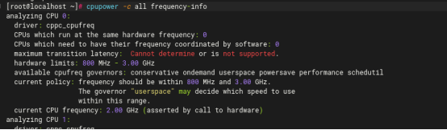
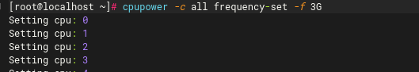
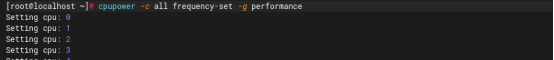
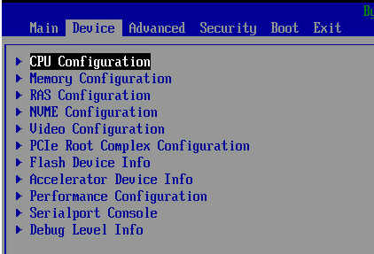
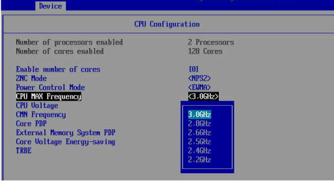
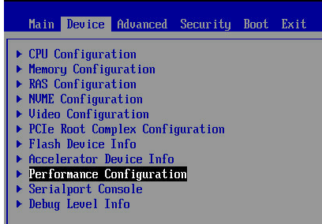
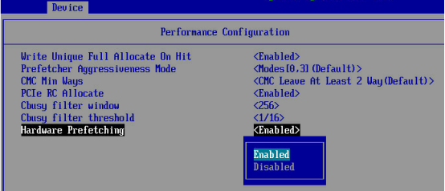
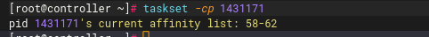

概述
CPU驱动了所有软件的运行,通常是系统性能分析的首要目标。
调优策略主要如下：
1.降低CPU利用率
2.提高CPU IPC，提升指令流水
3.降低上下文切换
4.提高缓存命中率
监控分析工具
| 工具 | 说明 |
|---|---|
| top | 用CPU百分比和ASCII条行直方图显示消耗CPU最多的任务。 |
| uptime | 平均负载 |
| vmstat | 系统整体的CPU使用率、上下文切换次数、中断次数，还包括处于运行和不可中断状态的进程数量 |
| mpstat | 每个CPU的使用率和软中断次数 |
| sar | 系统活动报告器，系统整体的CPU使用率，包括可配置的历史数据 |
| ps | 进程状态命令，列出了所有进程的细节信息，包括CPU用量统计信息 |
| pidstat | 按进程或者线程打印CPU用量，包括用户时间和系统时间的细分 |
| /proc/cpuinfo | 获取每个CPU信息，包括处理器型号、主频、缓存信息、物理核id、逻辑核id、cpu支持的功能等 |
| lscpu | 显示有关 CPU 架构的信息。输出内容包括：CPU、线程、内核的数量，以及非统一存储器存取（NUMA）节点等 |
| cpupower | 显示或调整CPU主频、频率模式 |
| perf | CPU性能事件剖析，如调用链分析、CPU缓存、CPU调度等 |
| htop | top的变种，提供了更多的交互功能、定制化以及CPU用量的ASCII条行图。 |
| atop | top的变种，使用进程核算技术捕捉短寿命进程，并将其包含在显示中。 |
| /proc/softirqs | 软中断类型和在每个CPU上的累积中断次数 |
| /proc/interrupts | 硬中断类型和在每个CPU上的累积中断次数 |
优化方法
提升CPU主频
方法一：cpupower
查看当前CPU的全部主频信息：

可见主频最高3GHz，当前为2GHz，可以提升主频以提升性能
设置CPU主频：

设置当前CPU为性能模式：

方法二：BIOS修改主频
进入BIOS，然后在BIOS的如下位置设置CPU的主频


修改CPU的预取开关
Cache之所以能够提高系统性能，主要是程序执行存在局部性现象，即时间局部性和空间局部性。
1）时间局部性：是指程序即将用到的指令/数据可能就是目前正在使用的指令/数据。因此，当前用到的指令/数据在使用完毕之后可以暂时存放在Cache中，可以在将来的时候再被处理器用到。一个简单的例子就是一个循环语句的指令，当循环终止的条件满足之前，处理器需要反复执行循环语句中的指令。
2）空间局部性：是指程序即将用到的指令/数据可能与目前正在使用的指令/数据在空间上相邻或者相近。因此，在处理器处理当前指令/数据时，可以从内存中把相邻区域的指令/数据读取到Cache中，这样，当处理器需要处理相邻内存区域的指令/数据时，可以直接从Cache中读取，节省访问内存的时间。一个简单的例子就是一个需要顺序处理的数组。
所谓的Cache预取，也就是预测数据并取入到Cache中，是根据空间局部性和时间局部性，以及当前执行状态、历史执行过程、软件提示等信息，然后以一定的合理方法，在数据/指令被使用前取入Cache。这样，当数据/指令需要被使用时，就能快速从Cache中加载到处理器内部进行运算和执行。但是由于只是基于访存的历史信息，硬件预取会取回大量无用的Cache块，占用访存带宽，还会导致严重的Cache污染问题。所以对于数据比较集中的场景，预取的命中率高，适合打开CPU预取，反之需要关闭CPU预取。
进入BIOS，然后在BIOS的如下位置设置CPU的预取开关。


CPU亲和性设置
CPU绑定的意义：一是现代服务器大多采用NUMA多处理器架构，一台服务器会安装多颗处理器（称为NUMA节点），而NUMA架构各节点资源较为独立的设计，决定了在不同NUMA节点共享数据的成本高昂，因此尽量将数据交互较为频繁的程序绑定在同一NUMA节点上是很重要的。二是进程/线程如果从一个核心切换至另一个核心上运行，需要面临上下文切换、缓存失效等问题，成本也很高。在对性能要求较高的软件中，这已经是造成时延抖动的一大来源之一。
查看指定进程的CPU亲和性属性：

以上查询结果的含义是，进程id为1431171的进程，可以在58-62号CPU上运行。
方法一：通过命令绑定进程/线程CPU
使用taskset /numactl指令给指定进程/线程绑定CPU
方法二：编程实现CPU绑定
如sched_getaffinity，CPU_SET,pthread等接口，都可以实现进程/线程的CPU绑定
独占核
让某个能够独占CPU，这个CPU什么都不做，就只做指定的任务，从而获得低延迟、高实时的好处。
通过在grub.cfg文件中添加：isolcpus=4,5,6,7
隔离CPU4,5,6,7，重启后配置生效。按好把需要优化的应用通过taskset绑定到独占核：taskset -c 4,5,6,7 xxx
从而保证低延迟要求
去掉Time Tick中断
如果核心上只跑一个线程，就没有必要用TimeTick进行中断，所以可以更改去掉Time Tick中断。
通过在grub.cfg文件中添加：nohz_full=4,5,6,7
可以关闭4-7核上的Time Tick中断。重启后，多次运行cat /proc/interrupts发现时钟中断已经停止，如果多个线程都绑定到隔离的cpu上，仍然会启动tick。
rcu_nocbs
先简单介绍下什么是RCU（Read-copy Update），在读多写少的情况下，这是一个高性能的锁机制，对于被RCU保护的共享数据，读者不需要获得锁就可以访问（速度快）。但是对于写操作，它首先copy一个副本，然后对副本进行修改，最后使用回调机制在适当的时候将原数据指针指向被修改的数据，因此写速度很慢。rcu_nocbs=cpulist 指定某些CPU是无回调的。当需要使用回调机制时，将工作转移到其他cpu，用以减轻nocb cpu的负载。
调度优先级和策略
nice命令可以用来调整进程的优先级。renice可以更改一个已经在运行的进程的优先级。
调度优先级也可以通过setpriority系统调用直接设置，而优先级和调度策略可以通过sched_setscheduler设置。
中断负载均衡
中断负载均衡：无论是软中断还是硬中断，它们的中断处理程序都可能会耗费大量的 CPU。开启 irqbalance 服务或者配置 smp_affinity，就可以把中断处理过程自动负载均衡到多个 CPU 上。